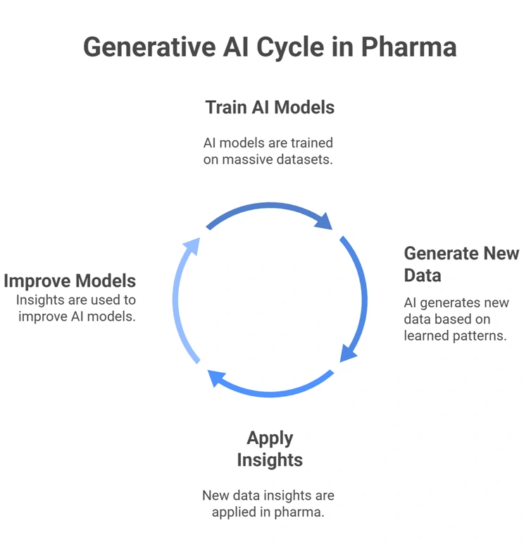
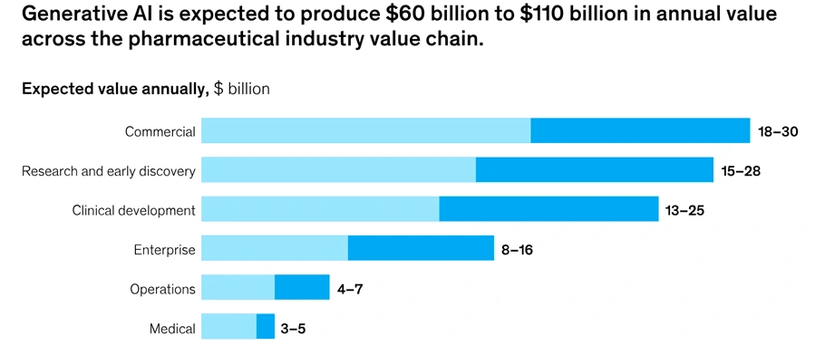
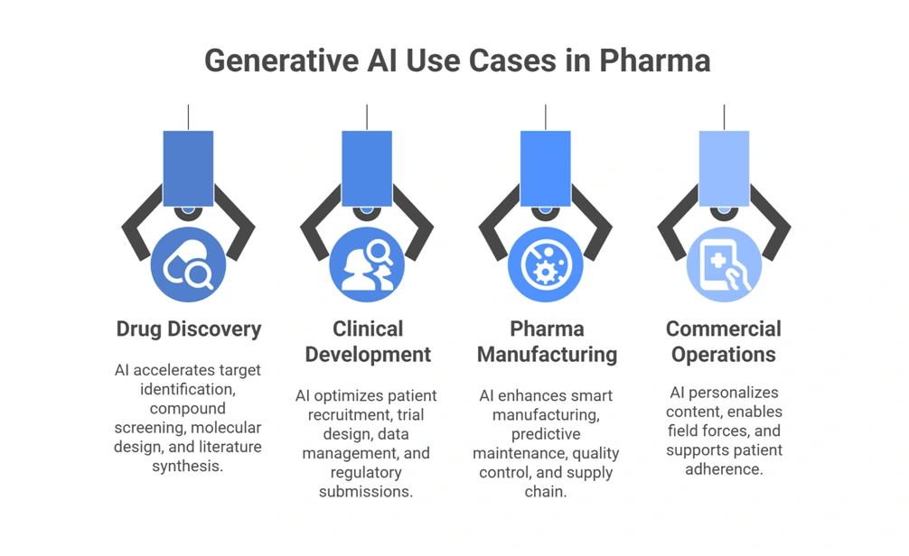
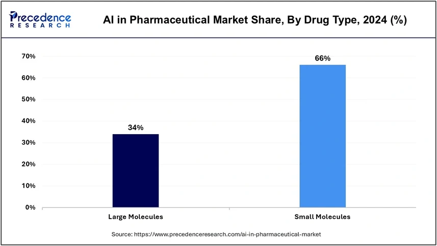
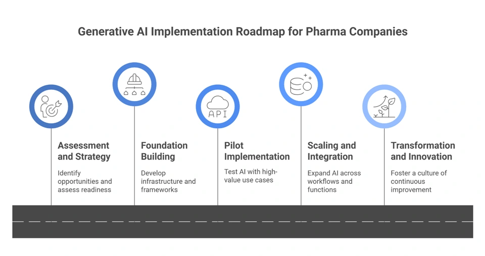
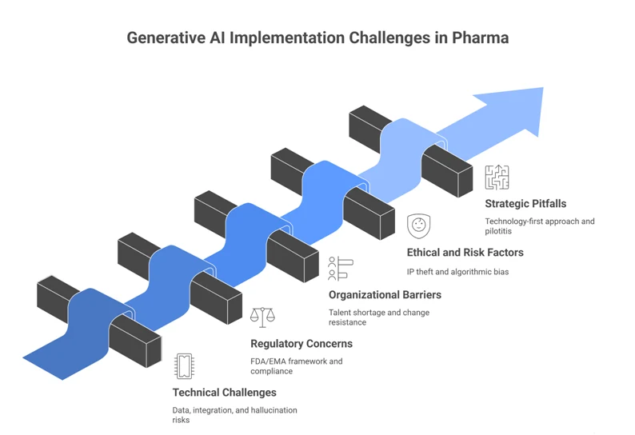
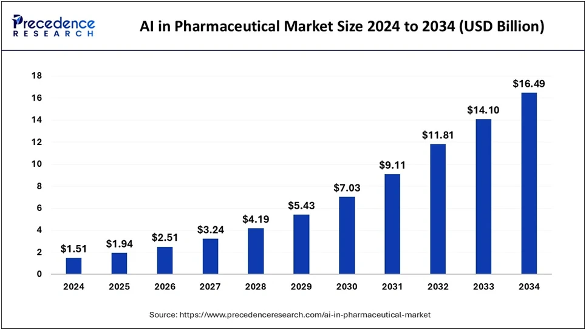

Generative AI in Pharma
Impact, Use Cases & Roadmap
Drug development has always been a race against time—and an expensive one.
When it takes 10-12 years, costs roughly $2.6B, and still ends in failure most of the time, the industry doesn’t need efficiency; it needs a different playbook.
Generative AI in pharma is helping write that playbook.
Unlike traditional analytics or classic machine learning models that predict outcomes or classify data, generative AI can create. It expands the space of what can be explored by creating new possibilities grounded in real-world data.


This shift moves pharma from iterative guesswork to rapid, data-driven exploration at a scale humans could never match.
Below, we break down how that shift works in practice. You’ll get practical insights, real use cases, and an implementation roadmap with FREE resources to help your teams move from early curiosity to enterprise-wide adoption.
Key Highlights
Definition:
Generative AI in pharma means AI models that generate new data (text, molecules, images, omics insights) from large, diverse datasets.
Core Benefits:
- Faster time-to-market and reduced R&D/clinical costs
- Higher clinical success rates via better molecule design and prediction
- Data democratization and better resource allocation
- Personalization at scale and improved quality/compliance
Key Applications:
- Discovery:
Target identification, in silico screening, molecular design, and literature synthesis. - Clinical:
Smarter patient recruitment, adaptive trial design, automated data management, and faster regulatory submissions. - Manufacturing/operations:
Smart factories, predictive maintenance, quality/deviation management, resilient supply chains. - Commercial: Personalized content, AI-assisted field force, patient support, and adherence programs.
Free Resources in this Guide:

What is Generative AI in the Pharma Industry?

Generative AI in pharma is a class of AI models trained to generate new data—text, images, molecules, even omics insights—based on patterns it’s learned from massive datasets.
Pharma is uniquely positioned to benefit.
Why?
Because few industries sit on such deep, structured, and proprietary data. This includes clinical reports, molecular libraries, genomic sequences, imaging data, and lab notes.
Generative AI thrives on diversity, making its multimodal nature (language, images, omics data, molecular structures) a perfect match for the pharmaceutical industry.
Pro Tip:
Use multimodal embeddings to integrate imaging, EHR, and molecular data into unified vector stores for expedited cross‑domain insights.
Now, before we move forward, it's important to address the “hype vs. reality” part.
Generative AI won’t invent the next blockbuster drug by itself. It can’t replace domain expertise or clinical validation.
What it can do is shorten research cycles, reduce manual load, and expand what’s possible in discovery pipelines. It will always act as a co-pilot that learns faster and sees wider, but still needs human oversight.
The Business Case: Why Generative AI Matters for Pharma Now
Pharma is under more pressure than ever. R&D costs are soaring, regulatory hoops keep multiplying, and competition is moving faster than ever.
Add to that a tidal wave of patient data, heightened expectations for personalized care, and shrinking patent cliffs. And suddenly, “business as usual” feels like a risk no one can afford.
Generative AI is coming up as the most powerful lever to change this equation.
According to McKinsey, companies adopting GenAI can shorten their drug development timelines by 1 to 4 years and gain $0.5-2 billion in additional revenue per new medicine.
That means you can shave years off your go-to-market window while gaining capital for the next breakthrough.

First movers gain the edge in market share, partnerships, and top-tier AI talent. The rest risk becoming case studies in missed opportunity.
What are the Key Benefits of Generative AI in Pharma?
Generative AI is a reinvention engine. Here are its key benefits:
- Speed to Market:
Pfizer’s COVID-19 vaccine went from concept to approval in 269 days—versus the typical 8–10 years. That’s AI-driven agility at work. - Cost Reduction:
AI-driven automation can cut R&D and clinical costs by 15-30%, saving millions per compound. - Success Rate Improvement:
With smarter molecule design and predictive modeling, clinical success rates rise above the traditional 10% barrier. - Data Democratization:
Insights that once took weeks now surface in 10-15 minutes, opening access beyond data scientists. - Resource Optimization:
Specialists can spend more time solving problems that matter, instead of cleaning data. - Personalization:
From tailored treatment paths to precision marketing, AI helps pharma get personal at scale. - Quality Enhancement:
Fewer deviations, fewer errors mean more confidence in compliance. - Competitive Advantage:
Move first, move fast, and let competitors play catch-up.
In short, GenAI isn’t just the next big thing—it’s the new baseline for pharma innovation.

Generative AI Use Cases in Pharma: From Discovery to Commercialization

If you think Generative AI (GenAI) is only for text generation or chatbots, the pharmaceutical world would like a word. Here, it’s discovering molecules, designing trials, managing data, and even rewriting the way drugs reach patients.
Pharma companies have long been data-rich but insight-poor.
Generative AI flips that dynamic. It is reestablishing the entire pharmaceutical value chain, from early-stage discovery to post-market operations and patient engagement.
Let’s see how:
Drug Discovery and Early Research
This is where you see GenAI provide $15-28 billion annually in value.
Because new-molecule discovery is massively resource-intensive, high-risk, and slow, generative AI’s impact is largest here.

— GenAI Lead, Aegis Softtech
Use Case 1: Target Identification and Validation
Deep learning and generative models help sift through massive datasets to find biological targets (proteins, receptors) and validate them.
Virtual-screening algorithms can predict drug-target interactions at scale.
For example, AI can repurpose existing drugs by identifying off-label targets. This improves initial assessments by up to 30 % and saves ~40 % time according to McKinsey.
Pro Tip:
Integrate ADMET (absorption, distribution, metabolism, excretion, toxicity) filters early; 40% of late‑stage failures stem from poor PK properties.
Use Case 2: In Silico Compound Screening
Here, foundation chemistry models (e.g., millions of virtual compounds) evaluate binding affinity and interactions digitally.
The performance lifts what used to take months now slides into weeks.
Use Case 3: Molecular Design and Optimization
One of the most prominent generative AI use cases in pharma is to use it to design novel chemical structures: small molecules, large molecules (proteins, antibodies, mRNA).

A great example is AlphaFold (DeepMind) achieving near-1.5 Å accuracy in some cases.
Pro Tip:
Layer AlphaFold structure predictions with MD simulations and experimental validation to confirm stability before committing to synthesis budgets.
Use Case 4: Scientific Literature Synthesis
We’re drowning in papers, patents, and trial reports. Generative AI enables rapid knowledge extraction.
GPT-style models parse literature, identifying insights you’d otherwise miss. This gives a comprehensive analysis rather than fragmented manual reviews.
Clinical Development and Trials Optimization
Clinical trials account for nearly 80% of total drug development costs, and historically, they’ve been slow, expensive, and prone to failure.
Generative AI is tackling these inefficiencies head-on by making trials smarter, faster, and more adaptive.

Use Case 1: Patient Recruitment and Stratification
Recruiting the right patients is the biggest bottleneck in clinical research. Generative AI models trained on Electronic Health Records (EHRs) can automatically identify eligible participants across demographics, conditions, and prior treatments. This is something humans might take months to do manually.
Tools like TrialGPT are already doing this. They help match patients to ongoing trials automatically based on trial criteria and patient data.
Predictive models can even forecast patient dropouts, helping reduce trial failure.
And with Decentralized Clinical Trials (DCTs) now becoming standard, AI helps coordinate remote participation, device data, and engagement. The result is 10-20% faster enrollment.
— Director, Generative AI, Aegis Softtech
Use Case 2: Trial Design and Protocol Optimization
Traditional trial design follows static templates. But GenAI can generate adaptive trial protocols, pulling from real-world data (RWD) to identify subgroups more likely to respond.
AI simulations predict how protocol adjustments impact endpoints before the first patient is enrolled. This cuts months from design cycles and improves the odds of trial success.
Use Case 3: Clinical Data Management
Imagine auto-generated case report forms that learn from prior studies, real-time anomaly detection, and AI-driven query resolution.
GenAI-powered systems streamline the entire data lifecycle, from ingestion to validation, reducing manual cleanup and accelerating insights.
Use Case 4: Regulatory Submission Acceleration
One of the biggest wins? Generative AI’s ability to auto-draft clinical study reports and predict Health Authority Queries (HAQs).
By understanding patterns from prior submissions, it can anticipate questions from regulators and draft responses faster.
Generative AI in Pharma Manufacturing and Operations
Here’s where AI meets the factory floor. McKinsey estimates a $4-7 billion value opportunity in this space, driven by improved efficiency and product quality.
Use Case 1: Smart Manufacturing and Production Optimization
With tools like AWS Bedrock, generative AI in pharma manufacturing can pinpoint the “golden batch”. These are (what they call) the ideal production parameters that you apply across operations.
Layer that with real-time anomaly detection and AI-driven operator guidance, and you’ve got a system that learns continuously, not just reacts.
Pfizer has already shown what’s possible in this regard:
- 10% product yield increase
- 25% cycle time reduction
- 20% throughput boost.
Also Read: Generative AI in Manufacturing
Use Case 2: Predictive Maintenance
AI models can forecast equipment failures before they happen, reducing unplanned downtime and maintenance costs. That means fewer disruptions, safer facilities, and better output predictability.
Use Case 3: Quality Control and Deviation Management
Generative AI helps investigate deviations, identify root causes, and even auto-populate CAPA reports. The result is a 65% reduction in overall deviations through digitization and automation, per American Pharmaceutical Review.
Use Case 4: Supply Chain and Inventory Optimization
Another use case of generative AI in pharma manufacturing is that it enables “no-touch” planning. This includes real-time adjustments, smarter demand forecasting, and early detection of issues.
The result is more resilient supply chains and fewer stockouts.

Commercial Operations and Market Access
Now let’s talk about the generative AI use cases in pharma, where 25-35% of pharma’s AI-driven value actually comes from: commercial operations.
Once a slow, compliance-heavy process, it’s now being reinvented with speed, precision, and personalization.
Use Case 1: Personalized Content Creation
Generative AI can spin up targeted marketing and educational materials in five days instead of five weeks. Pair that with automated MLR (Medical, Legal, Regulatory) reviews, and teams can scale compliant, hyper-personalized content faster than ever.
Use Case 2: Field Force Enablement
What if your sales rep could walk into a meeting with a healthcare provider and have an AI co-pilot that synthesizes all the latest data into actionable insights?
That’s actually happening right now!
Use Case 3: Patient Support and Adherence
Here’s the human side of the story. Nearly 50% of patients with chronic conditions stop medication in their first year.
AI-driven support programs can identify at-risk patients, guide them through reimbursement, and provide personalized care navigation. All of this keeps more patients on therapy longer.
How to Get Started: Implementation Roadmap for Pharma Companies

You’ve seen the case studies: AI accelerating drug discovery, optimizing clinical trials, improving regulatory submissions, even transforming medical writing.
But how do you implement GenAI in pharma without disrupting compliance, IP, or patient safety?
Below is a practical, phased roadmap designed specifically for pharmaceutical companies ready to move from experimentation to enterprise-scale impact.
Phase 1: Assessment and Strategy (Months 1-2)
| Budget Allocation |
10-–15% Focused on discovery workshops, audits, and readiness assessments. |
|---|---|
| Key KPIs |
- Defined GenAI roadmap with use case prioritization - Executive alignment and governance buy-in - Benchmark of digital maturity (data, infrastructure, culture) |
This is your “look before you leap” phase.
Start with value opportunity mapping. Scan your value chain from R&D to patient engagement to find where GenAI could create a measurable impact.
Then, assess your current state. How mature is your data? How digitally ready are your systems?
Create a use case prioritization framework. Rank initiatives by impact, feasibility, and regulatory complexity.
Also, identify your “no-regret bets”. These are quick wins like automating clinical summaries that deliver ROI while building confidence across teams.
Phase 2: Foundation Building (Months 2-4)
| Budget Allocation |
- 20-25% - Allocated to infrastructure upgrades, cloud migration, and AI governance frameworks. |
|---|---|
| Key KPIs |
- Centralized, high-quality data repository - Defined AI governance and compliance policy - Trained cross-functional team and leadership enablement |
Now you’re laying the digital backbone. This means strengthening your data infrastructure (clean, labeled, accessible data is your rocket fuel).
Decide on your technology stack, too. Do you want to build in-house, buy off-the-shelf, or partner with AI vendors? For the pharmaceutical industry, a hybrid partner model often works best, striking a balance between control and speed.
And, don’t skip on governance. Establish policies for data privacy, IP protection, and ethical AI. Build a cross-functional team structure of data scientists, compliance experts, and domain SMEs.
Upskilling your existing workforce is cheaper and smarter than hiring from scratch.
Pro Tip:
Embed MLR compliance checks into authoring workflows with AI‑powered claim validators; flag high‑risk content before review cycles to halve rework.
Phase 3: Pilot Implementation (Months 4-7)
| Budget Allocation |
- 25-30% - Primarily for prototype development, pilot execution, and evaluation frameworks. |
|---|---|
| Key KPIs |
- Pilot success rate (validated POCs) - ROI (time/cost savings) - Model accuracy and compliance adherence - Team adoption rate |
Now it’s time to move from strategy to proof. Start with 2–3 high-impact use cases.
For example:
- AI-generated molecule design and optimization.
- Automated clinical documentation and safety summaries.
- Generative copilots for regulatory or medical writing teams.
Also, establish a measurement framework. Track precision, time savings, and compliance alignment. Shift from proof of concept (PoC) to prototype with tight feedback loops. Capture learnings, refine your data pipelines, and iterate fast.
Get 8 FREE Ready-to-Pitch GenAI Pilots (with success metrics your CFO will actually approve)
Phase 4: Scaling and Integration (Months 7-12)
| Budget Allocation |
- 20-25% - Focused on platform scaling, integration, and change management |
|---|---|
| Key KPIs |
- Scaled AI models embedded in production systems - Enterprise adoption rate - Workflow cycle time reduction - Regulatory audit pass rate |
Once you’ve validated outcomes, scale smartly.
Move to a product-platform model, embedding GenAI capabilities into your existing IT ecosystem. Focus on end-to-end workflow reinvention, not just tool integration.
For example, instead of a standalone molecule generator, connect GenAI outputs to lab automation or clinical trial management platforms for seamless execution.
Encourage cross-functional collaboration—IT, compliance, and R&D need to work as one ecosystem.
Automate audit trails and drift alerts, and budget for MLOps; scaling fails more from operating model gaps than from model quality."
— VP, MLOps & Quality Systems, Aegis Softtech
Phase 5: Transformation and Innovation (Ongoing)
| Budget Allocation |
- ~10% ongoing investment - Dedicated to innovation labs, partnerships, and model R&D. |
|---|---|
| Key KPIs |
- Number of new GenAI initiatives per quarter - Time to scale new models - Innovation ROI (cost avoidance, speed-to-market gains) - Employee AI engagement index |
At this point, GenAI is an innovation engine. Mature pharma organizations treat AI as a continuously evolving capability.
Keep fueling innovation by building a culture of AI-first experimentation. Expand to adjacent and multimodal use cases, like combining molecule images with text-based trial data.
Also, partner with startups, AI labs, and academia to stay ahead and embed continuous optimization loops into every AI workflow.
Also Read: Generative AI in Software Development
Challenges and Considerations When Implementing Generative AI in Pharma

Bringing Generative AI into pharma sounds exciting. You could have new molecules, faster insights, and smarter documentation. But the reality is a maze of technical, regulatory, and cultural hurdles.
Let’s break down the key challenges of implementing generative AI in the pharma industry:
Technical Challenges:
Pharmaceutical data originates from various sources, such as clinical trials, lab tests, and patient histories. And, all this data rarely plays nice together.
Cleaning, tagging, and integrating it across legacy systems is a massive lift.
Then there’s the hallucination problem. GenAI can generate fake numbers or suggest false results that sound right but aren’t. That’s dangerous in a field where a misplaced decimal can significantly impact patient outcomes.
Also, GenAI isn’t well-suited for real-time monitoring, like checking patient vitals or drug supply chain updates.
Solutions:
- Establish robust data pipelines with validation layers before AI training.
- Use hybrid models—AI generates, humans verify.
- Limit GenAI to analytical and creative tasks, not real-time operations.
- Modernize legacy systems with API layers for smoother data exchange.
- Continuously retrain models on verified, domain-specific datasets.
Regulatory and Compliance Concerns:
The FDA and EMA are still defining how AI fits into the pharma industry through programs like the Software Pre-Certification Program.
But until the rules are crystal clear, companies face a “black box” problem. How do you validate an algorithm you can’t fully explain?
Meeting GMP compliance and documentation standards adds even more pressure.
Solutions:
- Adopt explainable AI frameworks to trace model logic.
- Maintain audit-ready documentation for every output.
- Collaborate with regulatory bodies early, not post-deployment.
- Implement validation protocols that mimic the rigor of clinical trials for AI tools.
- Keep human review checkpoints in every compliance-sensitive workflow.
Pro Tip:
Use federated learning to train models across sites without pooling patient data. It preserves privacy while expanding training cohorts in compliance with GDPR/HIPAA.
Organizational Barriers:
You need people who understand both molecules and machine learning—and they’re rare. Many teams also resist change or worry AI will disrupt established workflows.
This means pharma companies must invest in training operators, engineers, and researchers to work with these new tools.
Solutions:
- Launch upskilling programs pairing data scientists with life sciences experts.
- Create internal AI “centers of excellence” to guide implementation.
- Encourage leadership to model AI-first decision-making.
- Communicate wins early—small pilot successes help shift culture.
- Incentivize cross-functional collaboration between R&D, IT, and regulatory teams.
Ethical Risk:
Ethics in pharma AI go far beyond privacy management. Models trained on biased or incomplete datasets can unintentionally reinforce demographic inequalities, like underrepresenting certain populations in clinical predictions.
IP theft or data leakage is another real threat, especially when working with proprietary molecular or patient data.
And when patient data is involved, even minor lapses in anonymization can violate privacy laws and erode public trust.
Solutions:
- Use secure, compliant environments for model training and inference.
- Apply privacy-preserving techniques like federated learning.
- Build fairness and bias-check mechanisms into AI pipelines.
- Regularly audit datasets for representational bias.
- Establish clear AI ethics policies, reviewed by cross-functional boards.
Also Read: Generative AI in the Legal Industry
Strategic Pitfalls:
Even when the tech works, strategy can break it. Many pharma organizations fall into pilotitis—running multiple small AI pilots without ever scaling them into production.
Others approach AI from a “technology-first” mindset instead of solving specific problems.
Without clear executive ownership, a scaling roadmap, or measurable ROI targets, GenAI ends up as a side project—an experiment, not a transformation.
Solutions:
- Start with “problem-first,” not “tech-first,” use cases.
- Define success metrics tied to business and clinical impact.
- Assign C-suite sponsors for AI programs.
- Build an AI governance roadmap with clear scaling criteria.
- Integrate GenAI into long-term digital transformation, not side projects.
Real-World Examples: Pharma Companies Leading with GenAI
Once you’ve got the roadmap, the next logical question is: Who’s already doing this well?
Let’s look at how leading giants are proving that generative AI in pharma is real, measurable, and transformational.
Pfizer teamed up with AWS to turbocharge its R&D pipeline, most notably for the COVID-19 vaccine, developed in a record 269 days.
Its Vox platform (built on Amazon Bedrock) improved production efficiency with a 10% yield boost, 25% shorter cycle time, and 20% higher throughput. Their mRNA prediction algorithm added nearly 20,000 extra doses per batch.
Next up, Moderna uses AWS IoT and AI/ML to power connected manufacturing, run automated quality checks, and optimize its supply chain. This makes every production run faster and more reliable.
AstraZeneca partners with BenevolentAI and Qure.ai to apply GenAI in discovering new treatments for chronic kidney disease and pulmonary fibrosis.
And, Roche, ranked #1 in the Statista AI Readiness Index 2023, continues to acquire AI-first biotech firms to strengthen its innovation pipeline.
Finally, Janssen (Johnson & Johnson) runs 100+ AI projects through its Trials360.ai platform. This is transforming how clinical trials are designed and managed.
Future Trends: What's Next for Generative AI in Pharma Industry?

Generative AI in pharma is moving at a pace we’ve rarely seen before. What started as molecule generation is evolving into an interconnected, intelligent ecosystem that’s redefining how we discover, test, and commercialize therapies.
Let’s break down what the future holds for generative AI in pharma industry:
Near-Term (2025-2027):
In the short run, expect Generative AI to converge with synthetic biology, giving rise to AI-guided biofoundries that design, simulate, and validate compounds digitally before lab synthesis.
We’ll see the emergence of Agentic AI. These are autonomous AI systems capable of handling end-to-end workflows, from molecule ideation to trial documentation.
Meanwhile, multimodal models will take center stage, combining omics, imaging, and clinical data for unprecedented biological insights.
The convergence will set the stage for data-rich, precision-driven decision-making across the entire pharmaceutical value chain.
Mid-Term (2028-2030):
As we approach 2030, quantum computing integration will enable hyper-accurate simulations of complex biological systems. It will cut years off traditional R&D timelines.
AI-powered continuous manufacturing will streamline production, creating flexible, always-on plants that self-optimize in real time.
At the same time, real-time personalized medicine will go mainstream.
Generative AI models will sync with EHRs, wearables, and digital twins, dynamically tailoring treatments for each patient.
No more “one-size-fits-all”—just precision at scale.
Market Outlook:
According to Coherent Solutions, the global AI-driven drug discovery market is projected to reach $13 billion by 2032.
Also, the AI-based clinical research solutions are expected to exceed $7 billion by 2030. This is a clear signal that investment will shift from pilots to production.
Long-Term (2030+):
Looking beyond 2030, generative AI in the pharma industry will enter the age of autonomous discovery loops.
AI systems will be capable of generating, testing, and optimizing new molecules independently.
AI-designed organisms will produce active compounds sustainably. This will reduce the environmental and economic footprint of drug manufacturing.
We’ll also see predictive healthcare ecosystems, powered by digital twins and wearables. These will enable disease prevention before symptoms even appear.
And, finally, blockchain integration will ensure data integrity and IP protection across these intelligent systems, supporting regulatory transparency.
How Aegis Softtech Enables GenAI Transformation in Pharmaceutical Companies
Pharma’s next wave of breakthroughs won’t be driven by larger datasets or bigger teams. It will come from organizations that know how to operationalize GenAI with precision, compliance, and speed.
If you’re serious about turning GenAI from a concept into an engine that actually ships value across your pipeline, the caliber of your development team matters.
You need specialists who understand model behavior, data governance, integration constraints, and the realities of pharmaceutical operations—not generic AI generalists.
Aegis Softtech has seasoned Generative AI developers who build with your workflows, regulatory requirements, and long-term roadmap in mind.
If you’re ready to push your GenAI journey forward with developers who know how to build for pharma’s complexity, we can help you get there.
Frequently Asked Questions
AI in the pharma industry is used to accelerate drug discovery, clinical trials, and quality control. It does this by analyzing vast datasets, predicting molecule behavior, and automating R&D workflows—reducing time-to-market and improving drug safety and efficacy.
While Alan Turing is considered the father of AI, Dr. Alexander S. Poznyak and other pioneers have advanced AI applications in pharmacy, driving innovation in drug modeling, computational chemistry, and pharmaceutical automation.
Pfizer leverages AI for drug discovery, vaccine development, and clinical data analysis. Partnering with companies like IBM Watson and CytoReason, Pfizer uses AI models to predict immune responses and accelerate therapeutic design.
AI won’t replace pharmacists but will augment them. It will handle repetitive tasks like medication dispensing, interaction checks, and data entry. This frees pharmacists to focus on clinical decisions, patient care, and personalized therapy.
In Good Manufacturing Practice (GMP) environments, AI enhances process monitoring, quality assurance, and predictive maintenance, ensuring compliance and minimizing human error. AI-driven analytics also detect deviations early, boosting overall manufacturing reliability and consistency.